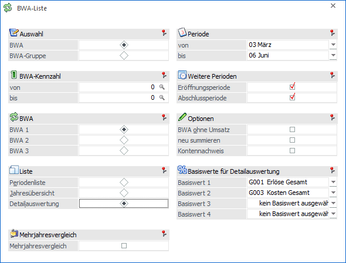
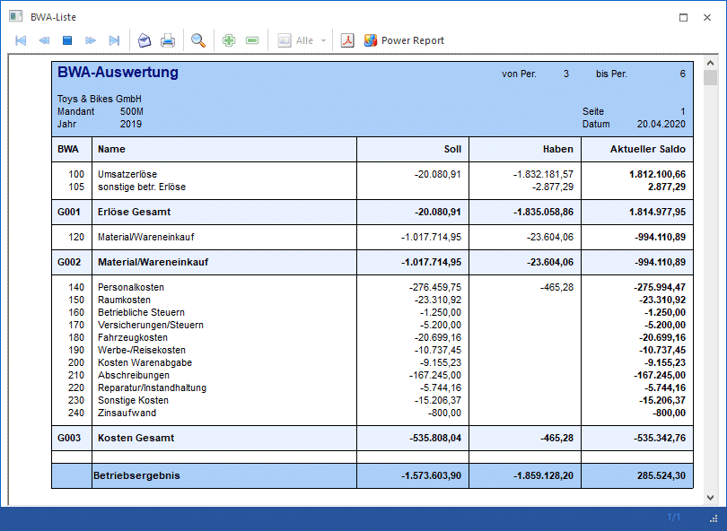
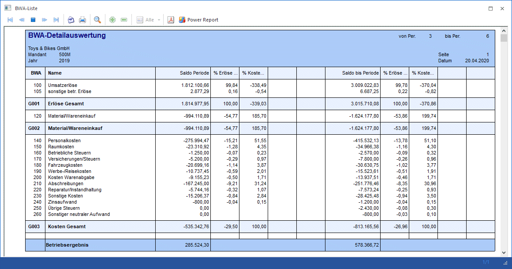
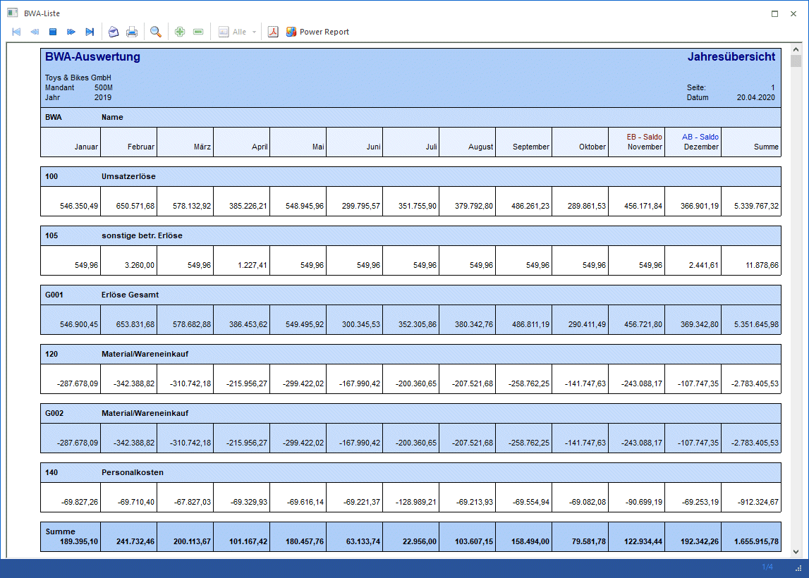
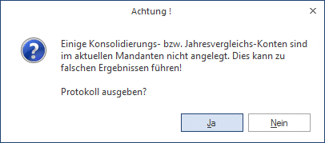
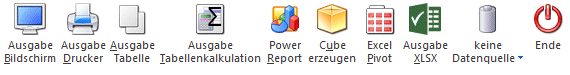

Im Menüpunkt…
1 WinLine FIBU
1 Auswertungen
1 BWA-Liste
… kann eine Auswertung aller angelegten BWA-Kennzahlen durchgeführt werden, wobei zwischen BWA1, BWA2 und BWA3 ausgewählt werden kann. Bei Aufruf der BWA-Liste wird diese nur dann neu gerechnet, wenn seit dem letzten Aufruf der BWA-Liste Buchungen hinzugekommen sind.

Ø Auswahl BWA / BWA-Gruppe
Hier wird die Auswahl getroffen, ob die BWA-Liste nach BWA oder BWA-Gruppe eingeschränkt ausgegeben werden soll. In den nachfolgenden Feldern kann eine Einschränkung der BWA-Kennzahlen bzw. BWA-Gruppen erfolgen.
Ø BWA-Kennzahl bzw. BWA-Gruppe von / bis
Einschränkung der BWA-Kennzahlen bzw. BWA-Gruppen, die ausgewertet werden sollen.
Ø BWA 1 / BWA 2 / BWA 3
Es kann entschieden werden, für welche BWA die Auswertung erfolgen soll.
Ø Periodenliste
Bei der Periodenliste wird eine Liste erstellt, die die Werte Soll, Haben und Saldo der Perioden aufweist.
Ø Jahresübersicht
Die Jahresliste enthält die Salden pro Periode und Gesamt.
Ø Detailauswertung
Auf der Detailauswertung wird neben dem Saldo des selektierten Zeitraums auch der Saldo ab WJ-Beginn angedruckt.
Ø Periode von / bis
Einschränkung der Perioden, die ausgewertet werden sollen.
Ø Eröffnungsperiode
Durch Aktivieren der Checkbox werden auch die Werte der Eröffnungsperiode angezeigt.
Ø Abschlussperiode
Durch Aktivieren der Checkbox werden auch die Werte der Abschlussperiode angezeigt.
Ø BWA ohne Umsatz
Ist diese Checkbox aktiv, werden auch die BWAs gedruckt, die keine Umsätze aufweisen.
Ø neu summieren
Ist diese Checkbox aktiv, werden die Werte pro BWA für den Ausdruck neu berechnet. Ist diese Checkbox nicht aktiv, werden die Werte der letzten BWA-Auswertung mit Summation verwendet.
Ø Kontennachweis
Ist diese Option aktiviert, dann werden neben den BWA-Kennzahlen auch die dazugehörigen Konten mit ihren Werten mit angedruckt.
Ø Basiswerte für Detailauswertung
Für die Detailauswertung können aus den vier Comboboxen "Basiswert 1" bis "Basiswert 4" BWAs oder BWA-Gruppen als Basiswerte ausgewählt werden, die für die Berechnung der Prozent-Anteile verwendet werden sollen. Die Auswahl in diesen Comboboxen wird bei der Ausgabe benutzer- und mandantenabhängig gespeichert
Ausdruck BWA-Periodenliste

Hinweis
Im Gegensatz zu der BKZ-Summierung, die immer auf Basis von evtl. eingerichteten Hauptbuchkonten bzw. "normalen" Konten stattfindet, werden bei der BWA-Summierung immer die einem Konto hinterlegten BWA (gleichfalls für Hauptbuch-, Nebenbuch- oder "normale" Konten) für die Auswertung angewendet.
Ausdruck BWA-Detailauswertung

Ausdruck BWA-Jahresübersicht

Ø Mehrjahresvergleich
Wird die Checkbox "Mehrjahresvergleich" aktiviert, wird ein zusätzlicher Bereich im Fenster "BWA Liste" geöffnet, in dem es mehrere Auswahlkriterien gibt. Es können bis zu 5 aufeinanderfolgende Wirtschaftsjahre verglichen werden, wobei folgende Werte mit angedruckt werden können:
ü Konten
Anzahl der zugewiesenen
Konten
ü Soll
Summe Soll
ü Haben
Summe Haben
ü Saldo
ü Budget 1/Budget 2
Zusätzlich dazu kann noch entschieden werden, auf welcher Basis die Vergleichsprozentsätze berechnet werden sollen:
Ø Basis für Prozentsätze
ü Aktuelles Jahr
Als Basis für
die Vergleichsberechnungen wird das aktuelle Jahr verwendet
ü Folgejahr
Als Basis für die
Vergleichsberechnungen wird das Folgejahr verwendet
Achtung
Im Sachkontenstamm muss das Jahresvergleichskonto eingetragen sein. Beim BWA-Mehrjahresvergleich werden die Konten über das im Kontenstamm eingetragene Jahresvergleichskonto verknüpft.
Wenn ein Jahresvergleichskonto im Kontenstamm nicht in allen Wirtschaftsjahren existiert, wird bei der Ausgabe der BWA-Mehrjahresauswertung eine Meldung ausgegeben und ein Prüfprotokoll kann mit angedruckt werden oder nicht.

Achtung
Hat das aktuelle Wirtschaftsjahr eine andere Landeswährung 1 als die Vorjahre, werden diese in die aktuelle Landeswährung umgerechnet.
Buttons

Ø Ausgabe Bildschirm
Mit Hilfe des Buttons "Ausgabe Bildschirm" oder der Taste F5 wird die Auswertung am Bildschirm ausgegeben.
Ø Ausgabe Drucker
Durch Anwahl des Buttons "Ausgabe Drucker" wird die Auswertung am Drucker ausgegeben.
Ø Ausgabe Tabelle
Bei der Anwahl des Buttons "Ausgabe Tabelle" wird die BWA-Liste in Form einer WinLine Tabelle dargestellt.
Ø Ausgabe Tabellenkalkulation
Wenn der Button "Ausgabe Tabellenkalkulation" gedrückt wird, so werden die Daten in der WinLine Tabellenkalkulation (ähnlich Microsoft Excel) dargestellt.
Ø Power Report
Durch Drücken des Buttons "Power Report" wird die Auswertung auf Basis von Cube-Daten grafisch dargestellt. Die Ausgabe ist individuell anpassbar und erfolgt in der Form von "Widgets", die unterschiedlichsten Darstellungen ermöglichen.
Ø Cube erzeugen
Wenn die Option "Cube erzeugen" gewählt wird (nur möglich, wenn auch die entsprechende Lizenz dafür vorhanden ist), dann wird die BWA-Liste im "Olap Viewer" angezeigt. In diesem können die Daten nach verschiedenen Gesichtspunkten ausgewertet werden.
Ø Excel Pivot
Durch Anwahl des Buttons "Excel Pivot" werden die selektierten Zeilen in Form einer Pivot Ausgabe in Microsoft Excel (2007 oder höher) angezeigt.
Ø Ausgabe XLSX
Mit Hilfe des Buttons "Ausgabe XLSX" wird die Auswertung mit den von Ihnen definierten Selektionen an Microsoft Excel übergeben.
Ø Datenquelle
Mit Hilfe dieser Auswahl kann definiert werden, ob und wie eine Datenquelle (d.h. ein Snapshot oder eine MasterView) verwendet werden soll.
ü Keine Datenquelle
Bei Auswahl
von "keine Datenquelle" wird keine zuvor angelegte Datenquelle genutzt. D.h. die
Daten werden von der WinLine "live" ermittelt und in der gewünschten Form
ausgegeben.
Hinweis
Da die BI-Ausgabe (z.B. Cube oder Power Report) immer eine Datenquelle benötigt, wird im Hintergrund eine temporäre Datenquelle (Snapshot) gebildet.
ü Datenquelle
erstellen/aktualisieren
Die Daten werden zur Laufzeit ermittelt und an einen
zu definierenden Snapshot übergeben. Nach dem Füllen der Datenquelle wird die
gewünschte Ausgabevariante über die Datenquelle erzeugt. Dieser Vorgang kann mit
einer Zeitverzögerung verbunden sein, da die Daten zusätzlich gespeichert werden
müssen.
Hinweis
Die Ausgabevarianten "Ausgabe Tabelle" und "Ausgabe Tabellenkalkulation" stehen bei der Erstellung / Aktualisierung einer Datenquelle nicht zur Verfügung.
ü Datenquelle verwenden
Bei der
Verwendung eines Snapshots werden die Daten direkt aus der Datenquelle gelesen,
d.h. die für die Ausgabe benötigten Daten können ohne Verzögerung in der
gewünschten Variante ausgegeben werden.
Wird hingegen eine MasterView
gewählt, so werden die Daten für die Ausgabe "live" ermittelt, wobei diese so
aktuell sind wie die zugrunde liegenden Datenquellen.
Hinweis
Der Button "Datenquelle verwenden" wird nur angeboten, wenn für diesen Bereich (bezogen auf den aktuellen Benutzer / Mandanten) zumindest eine private oder öffentliche Datenquelle existiert. Des Weiteren stehen die Ausgabevarianten "Ausgabe Bildschirm", "Ausgabe Drucker", "Ausgabe Tabelle" und "Ausgabe Tabellenkalkulation" nicht zur Verfügung.
Hinweis
Weitere Informationen zum Thema "Datenquellen" entnehmen Sie bitte dem Kapitel "Die Datenquelle".
Ø Ende
Durch Drücken des Buttons "Ende" bzw. der Taste ESC wird das Fenster geschlossen.